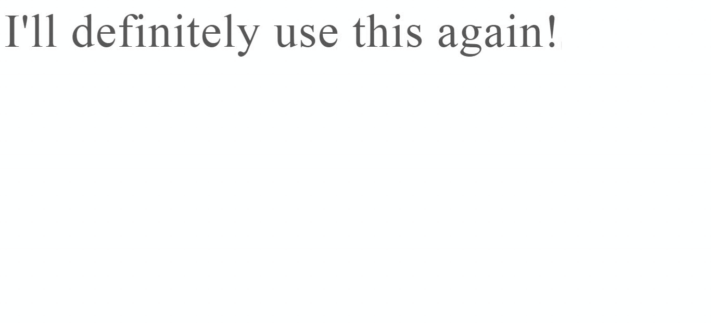

Mindset before going in
I am developing and designing my personal website for blog-posts and projects. I want my Header to consist of a text like:
Hey, I'm Jovan
Simple and to the point. However I thought of a cool idea to use a JS library I saw someone use called Typed.js. Check it out here so you understand the principle : Link
So as you can see the library basically allows you to type out something and delete it and type something else but it makes for a cool effect on your webpage by making it look like a cool old typewriter effect to add.
My vision:
So the header I wanted to have at the start and at the end of the animation is:
Hey, I'm Jovan.
But I thought of a cool way for people to understand who I am from the start is to delete until it looks like: Hey, I'm
And then to circle around different things I do like:
- a Software Engineeer
- a Web Developer
- a student
and then to end with saying : Hey, I'm Jovan.
So that way people get a feeling of what the website is about in an interactive and pretty simple way.
My Steps
- Download the library and add to project folder
- Add scripts to the header
- Add the needed script to function
- Modify to your needs
First of all you need to download the library so here's is the link if you want to follow along with this post/tutorial. After downloading the .zip extract the files and add the whole folder to your projects source folder.
These are the needed scripts that make the library function, you need to inculde them on the header of your HTML file.
<script src="https://ajax.googleapis
.com/ajax/libs/jquery
/3.5.1/jquery.min.js"></script>
<script src="./typed.js-master/lib/typed.min.js"></script>
This is only the basic code that the website provides, when we move on we will change and modify this code for our needs
var typed = new Typed('.element', {
strings: ["First sentence.", "Second sentence."],
typeSpeed: 30
});
This is how that simple format looks with a little CSS added in the mix.

So we have already enstablished what I want to be on my site so let's try to implement it here. After adding the text I wanted I realised that it typed too fast. I slowed the typing speed by going in the script and playing with the typeSpeed attribute and found what I liked at: typeSpeed : 90
After that I needed to add another attribute so I could play arround with the speed that it backspaced the text. I searched in the files provided the code that can do that and found that I can just add backSpeed: 40 in the script which was a great speed. While searching throught the code I also found an attribute backDelay, which delays the time between when the line is typed and when it's deleted however I didn't use it.
I thought I was finished here but when you use CSS and make your text bigger the cursor when the library is typing isn't getting bigger with the text so you have to find the variable and modify it. So after reading the README file I found the variable and modified it by adding this to my CSS file:
.typed-cursor {
font-size: 5.5rem;
color:rgb(87, 87, 87);
}
Final product
Pretty cool right? If you want to try it yourself here is where you can get my source code:
Codepile
In order to run this you have to also install the library and add it to the same folder.
GitHub
This is the complete code I used in this example & the library so by downloading the code you get both.
Final thoughts/ Goodbyes
Thank you so much for reading this If you made it to here tell me what's your favorite song in the comments :)!
I hope this helped anyone and Thanks again!
~Jovan